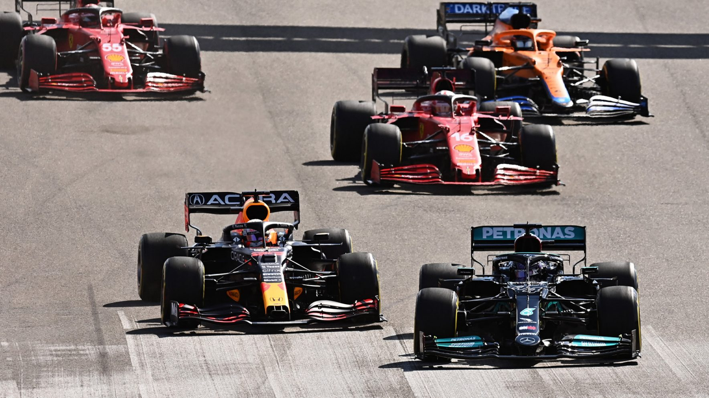
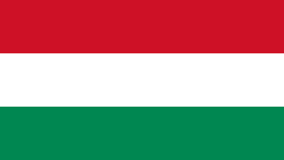

F1 banene 2022

Montréal
Texas
Miami
Mexico by
São Paulo
Europa
Baku
Midtøsten
Singapore
Suzuka
Melbourne
Midtøsten:

Bahrain
Bahrain International Circuit

Banelengde
5,412 km
Banerekord
1:31.447
Første løp
2004
Antall runder
57
Saudi Arabia
Jeddah Corniche Circuit
Banelengde
6,174 km
Banerekord
1:30.734
Første løp
2021
Antall runder
50
De forente arabiske emirater
Yas Marina Circuit

Banelengde
5,281 km
Banerekord
1:26.103
Første løp
2009
Antall runder
58
Australia
Albert Park Circuit

Banelengde
5,281 km
Banerekord
1:20.260
Første løp
1996
Antall runder
58
Singapore
Marina Bay Street Circuit

Banelengde
5,063 km
Banerekord
1:41.905
Første løp
2008
Antall runder
61
Japan
Suzuka International Racing Course

Banelengde
5,807 km
Banerekord
1:30.983
Første løp
1987
Antall runder
53
Aserbajdsjan
Baku City Circuit

Banelengde
6,003 km
Banerekord
1:43.009
Første løp
2016
Antall runder
51
Brasil
Autódromo José Carlos Pace

Banelengde
4,309 km
Banerekord
1:10.540
Første løp
1973
Antall runder
71
Mexico
Autódromo Hermanos Rodríguez

Banelengde
4,304 km
Banerekord
1:17.774
Første løp
1963
Antall runder
71

USA
Miami International Autodrome

Banelengde
5,412 km
Banerekord
1:31.361
Første løp
2022
Antall runder
57
USA
Circuit of The Americas
Banelengde
5,513 km
Banerekord
1:36.169
Første løp
2012
Antall runder
56
Canada
Circuit Gilles-Villeneuve

Banelengde
4,361 km
Banerekord
1:13.078
Første løp
1978
Antall runder
70
Europa:
Italia
Autodromo Enzo e Dino Ferrari

Banelengde
4,909 km
Banerekord
1:15.484
Første løp
1980
Antall runder
63
Spania
Circuit de Barcelona-Catalunya

Banelengde
4,675 km
Banerekord
1:18.149
Første løp
1991
Antall runder
66
Monaco
Circuit de Monaco

Banelengde
3,337 km
Banerekord
1:12.909
Første løp
1950
Antall runder
78
Storbritannia
Silverstone Circuit

Banelengde
5,891 km
Banerekord
1:27.097
Første løp
1950
Antall runder
52

Østerrike
Red Bull Ring

Banelengde
4,318 km
Banerekord
1:05.619
Første løp
1970
Antall runder
71
Frankrike
Circuit Paul Ricard

Banelengde
5,842 km
Banerekord
1:32.740
Første løp
1971
Antall runder
53
Ungarn
Hungaroring
Banelengde
4,381 km
Banerekord
1:16.627
Første løp
1986
Antall runder
70

Belgia
Circuit de Spa-Francorchamps
Banelengde
7,004 km
Banerekord
1:46.286
Første løp
1950
Antall runder
44
Nederland
Circuit Zandvoort

Banelengde
4,259 km
Banerekord
1:11.097
Første løp
1952
Antall runder
72
Italia
Autodromo Nazionale Monza